2026
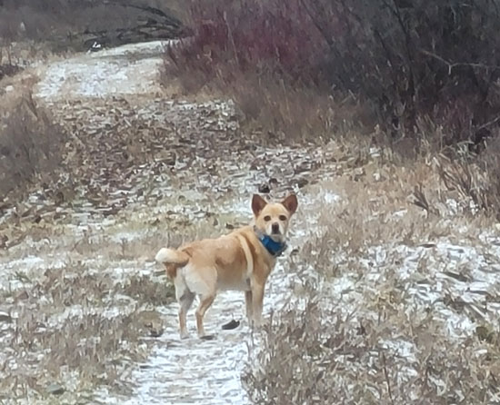
You can tell when I'm walking him without Eric. He
has to wear both a tracker and a training
collar when it's just me. It's a lot to pack around!
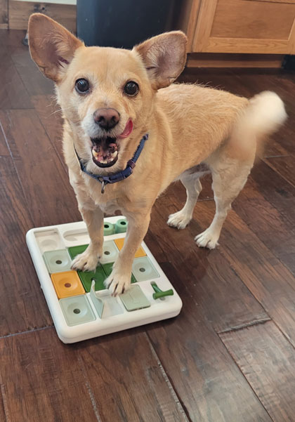
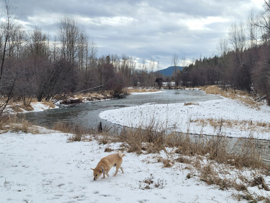
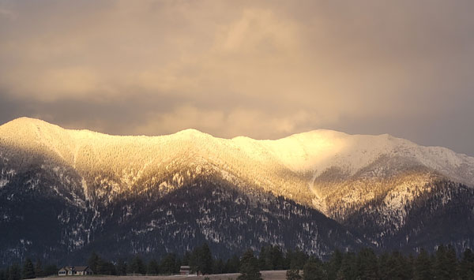
Beautiful sunset one evening. We call this yellow light, "The Golden Hour", but it's really about 15 minutes.
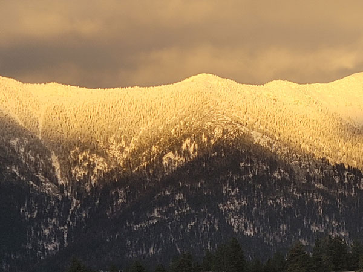
It's foggy and gray here in winter so often, but when it
does clear up it seems super clear.
It feels like you can see each individual tree on the
mountain.
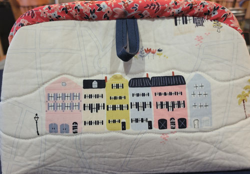
When we went to Charleston, SC last fall I bought some
Charleston fabric.
I made this adorable snap bag out of it this month.
It's Rainbow Row!
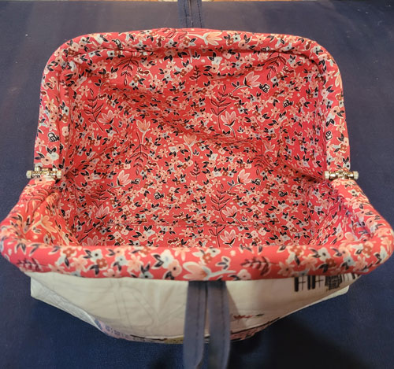
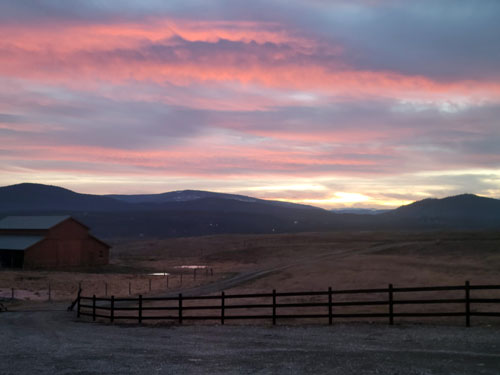
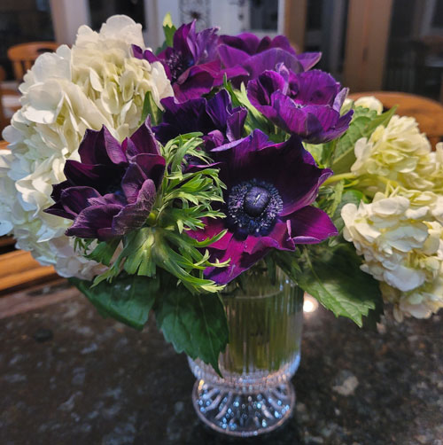
Beautiful condolence flowers from the Eash family.
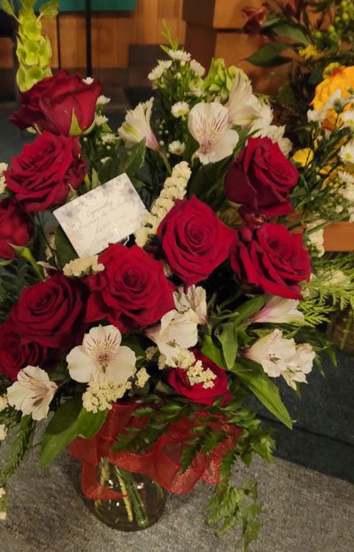
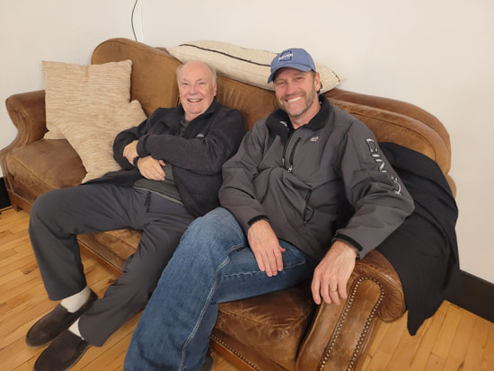
Setting up for the funeral reception. Jeb rests
with Uncle Tim after doing a bunch of setup work.
Thanks to Rose, Uncle Tim got a new outfit, new haircut, and
was all spiffed up for the funeral.
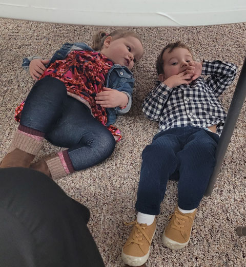
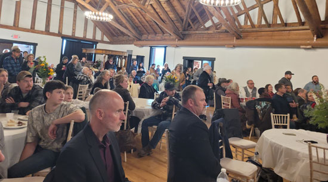
A view of the crowded funeral reception at The Timbers Lodge.
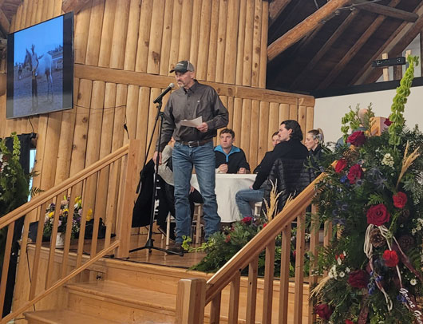
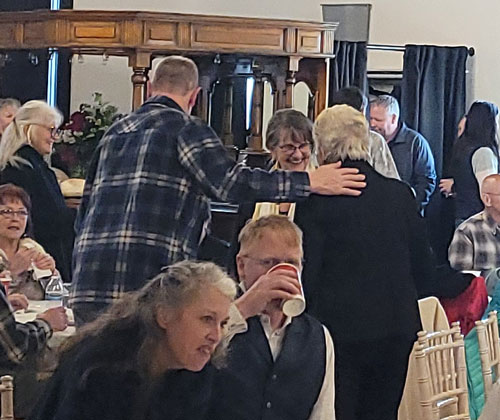
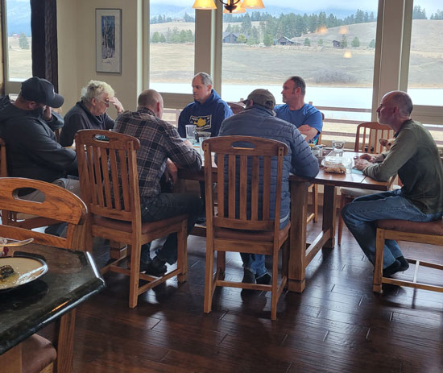
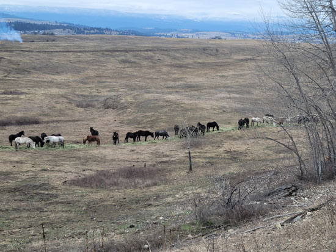
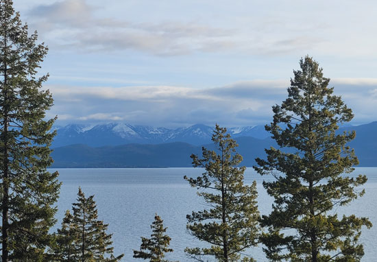
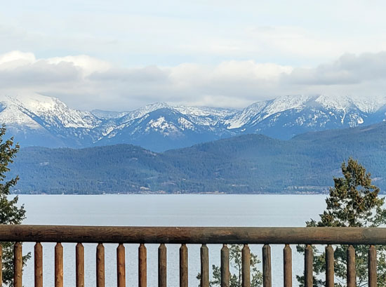
The views from the second floor dining room. They
fed us two hearty meals a day and we sewed
for the rest of the time.
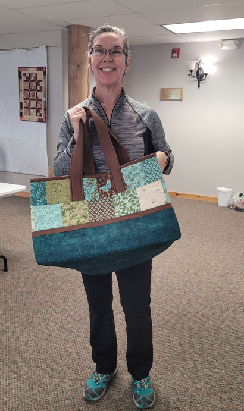
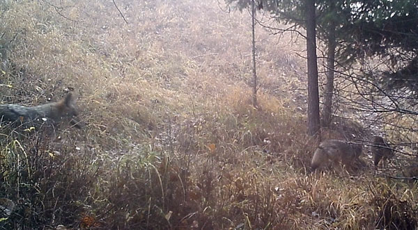
Trail cam photos. We haven't seen a single deer on them since September.
Here we have 3 coyotes in one photo.
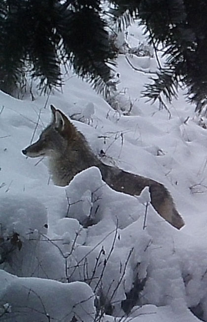
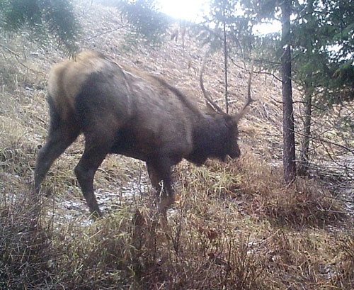
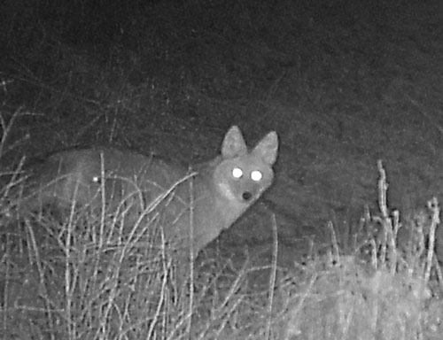
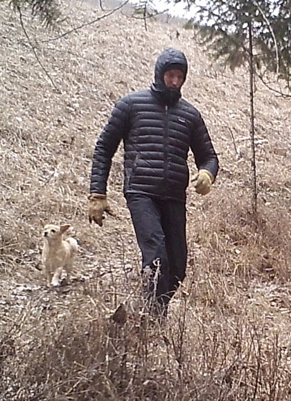